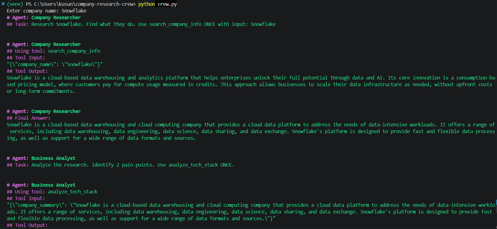
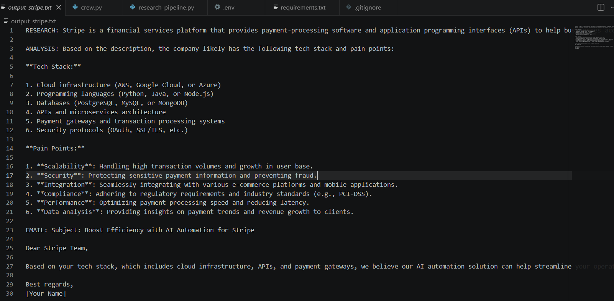

Multi-agent autonomous research system built with CrewAI and Cloudflare Workers AI
For a lead generation business, every cold email needs to reference specific pain points, tech stack, and business challenges. Doing this manually means either generic emails (ignored) or hours of research per prospect (unscalable). The goal: automate the research, analysis, and writing pipeline so a single input produces a ready-to-send, personalized email in under 60 seconds.
Instead of one monolithic script, this system uses agent orchestration — three specialized AI agents that pass context sequentially, each doing one job exceptionally well. This is the same architecture powering enterprise AI systems, scaled down to a lightweight Python implementation.
"Gather comprehensive information about any company via live Google search"
What it does: Takes a company name, calls Serper.dev to search Google in real-time, then uses Cloudflare's Llama 3.1 8B to summarize the search results into a structured company profile.
Output: 300-word summary covering what the company does, their industry, target customers, and business challenges.
Tool: search_company_info — custom Python function wrapping Serper API + LLM summarization.
"Identify tech stack, pain points, and AI automation opportunities"
What it does: Reads the Researcher's output, then uses the LLM to infer likely technology stack, operational inefficiencies, and where AI automation could deliver the most value.
Output: Structured analysis with specific pain points and automation ideas.
Tool: analyze_tech_stack — custom function that prompts the LLM for business analysis.
"Write compelling, personalized cold emails that reference real pain points"
What it does: Receives both the Researcher's company summary and the Analyst's pain points, then crafts a cold email under 150 words that references specific, researched details.
Output: Ready-to-send outreach email with personalized hooks.
No tool needed: Pure LLM generation with rich context from previous agents.
Building a multi-agent system from scratch meant navigating real engineering trade-offs. Here are two key challenges and how they were resolved.
When the full CrewAI version hit framework complexity (context window limits, JSON parsing loops), the approach wasn't to get stuck — it was to build a lightweight fallback that does the exact same thing with zero framework overhead.
requestsSolution: Pivoted to Cloudflare Workers AI. Llama 3.1 8B running at the edge, 10,000 neurons/day free tier, no rate limits. Same output quality, faster inference, zero cost.
What this proves: Tool-agnostic problem solving. When one API fails, pivoting to another without losing momentum is the difference between someone who experiments with AI and someone who ships production systems with AI.

CrewAI execution — Researcher searches, Analyst evaluates, Writer composes
Why Cloudflare Workers AI?
Unlike static LLM knowledge (training data cutoff), this system uses Serper.dev to search Google in real-time. When you ask about "Stripe," it doesn't guess from 2023 training data — it reads Stripe's current homepage, recent news, and product updates.

Complete pipeline output for Stripe — from live search to ready-to-send email
This project mirrors the exact challenges businesses face when building AI agents that integrate with real business data: handling API failures gracefully, orchestrating multiple specialized agents, and explaining technical work to non-technical stakeholders. The CrewAI version shows the ability to work with frameworks and enterprise patterns. The lightweight fallback shows the ability to strip frameworks and still ship when constraints demand it. Both are necessary skills when managing multiple client accounts or internal workflows with different technical requirements and uptime expectations.